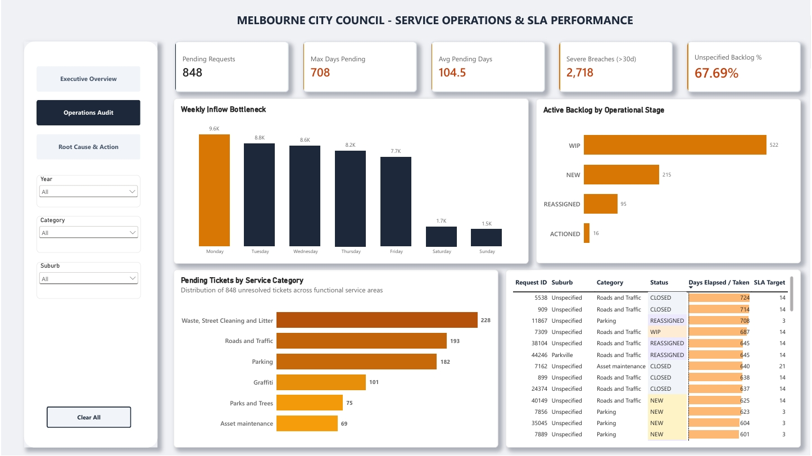
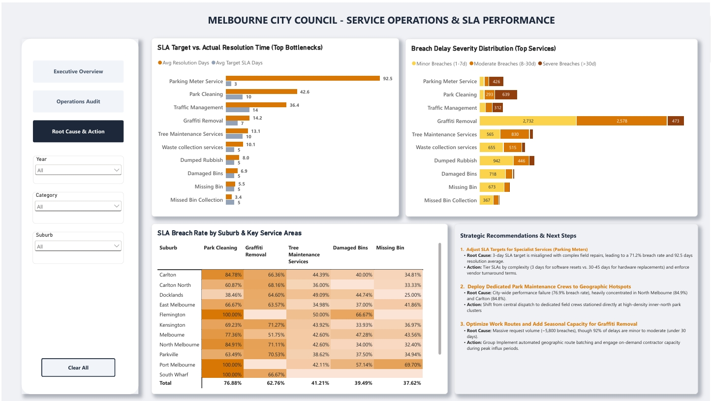

City of Melbourne
Council Service Operations & SLA Performance Analytics
An end-to-end data analytics and decision-support project auditing 46,479 council service requests to evaluate SLA compliance, diagnose operational bottlenecks, and formulate data-backed dispatch recommendations.

1. Operational Context & Challenge
The City of Melbourne delivers public council services across 27 operational categories, ranging from high-turnover street cleaning and graffiti removal to parking meter repairs and tree maintenance. Operating under defined Service Level Agreements (SLAs), the council targets rapid issue resolution to maintain urban liveability.
However, council operations experienced a high SLA breach rate of 38.59% (17,611 breached requests out of 45,631 completed cases). At the same time, an active backlog of 848 unresolved requests was delayed up to 708 days. The primary objective of this project was to identify workflow bottlenecks, addressing intake data quality gaps, and provide data-backed recommendations to reduce backlog queues.
2. Data Architecture & Star Schema Design
Raw service request logs from the City of Melbourne Open Data Portal were processed through a Python pipeline and staged into a relational SQLite database. To ensure fast analytical queries in Power BI, data was modeled into a clean Star Schema:
- Fact Table (
fact_service_requests): Contains 46,479 service request records tracking SLA performance metrics, includingdays_to_complete,sla_target_days,sla_status,is_sla_breached, andrequest_status. - Dimension Tables:
dim_category: Mapscategory_id, service classification (category), and detailed request type (service_desc).dim_suburb: Containssuburb_idandsuburb_nameacross the City of Melbourne council areas.dim_date: Full calendar dimension keyed byreceived_date_keyto analyze day-of-week and monthly trends.
Data Cleaning & Handling: Requests not marked as Closed were grouped into an active Pending backlog to prevent completed turnaround metrics from skewing. Missing suburb values in 67.7% of pending requests were labeled as "Unspecified" rather than dropped, preserving the full audit trail.
3. Diagnostic Insights & Root-Cause Analysis
Auditing the 24-month operational period through SQL queries and Power BI analysis identified key drivers behind SLA failures:
- High Volume vs. Long Turnaround: Waste, Street Cleaning & Litter handled the largest request volume (~21k requests) while maintaining strong compliance. In contrast, Parking (44.1% breach rate) and Parks & Trees (40.4% breach rate) showed high breach rates driven by long turnaround times rather than high ticket volume.
- Field Execution Bottlenecks: Over 61% of active pending requests remained in the Work In Progress (WIP) stage, showing that delays happen during field execution and contractor dependency rather than intake dispatch. Intake peaks on Mondays also created weekly dispatch queues.
- Hardware & Suburb Bottlenecks:
- Parking Meter Faults: Had a 71.2% breach rate, averaging 92.5 days to complete against a 3-day SLA target due to hardware repairs and third-party vendor dependencies.
- Park Cleaning: Averaged 42.6 days to complete against a 10-day target (76.9% breach rate), with high breach concentrations in Carlton (84.8%) and North Melbourne (84.9%).
- Graffiti Removal: Accounted for ~5,800 breach cases, but 92% of these breaches were resolved within 1 to 30 days past the target, indicating seasonal workload peaks rather than workflow stalls.
4. Decision-Support Solution (Power BI)
The solution was deployed as an interactive 3-tier reporting suite providing operational oversight across leadership and field management:
-
Page 1: Executive Overview (SLA & Demand Performance):
Offers high-level tracking of council-wide breach rates, 24-month historical trends, and department-level target vs. actual resolution gaps. -
Page 2: Operations Audit (Workflows & Backlog Aging):
Enables dispatch managers to monitor day-of-week intake patterns, track workflow stage handoffs, and audit breaches across 3 severity tiers: Minor (1-7 days), Moderate (8-30 days), and Severe (>30 days overdue).
-
Page 3: Root-Cause Analysis & Strategic Actions:
Identifies service types with high breach rates (Parking Meters, Park Cleaning, Graffiti) and suburb-level trends to deliver data-backed operational recommendations.
5. Strategic Recommendations & Deliverables
To address operational bottlenecks and improve SLA compliance, the project outlines three practical operational recommendations:
- Tiered SLA Targets: Split parking meter SLAs into a 3-day target for software resets and a 30-to-45-day target for physical hardware replacements, paired with revised vendor turnaround agreements.
- Localized Park Maintenance Hubs: Shift from centralized depot dispatch to dedicated maintenance crews stationed in high-demand park zones (Carlton and North Melbourne), backed by proactive weekly sweeps.
- Route Optimization & Contractor Support: Group graffiti cleaning requests into geographic clusters to cut travel time, and deploy on-demand local contractor panels during seasonal surges.